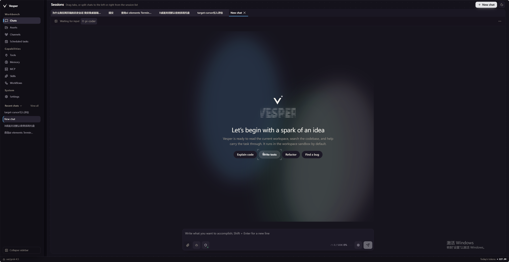
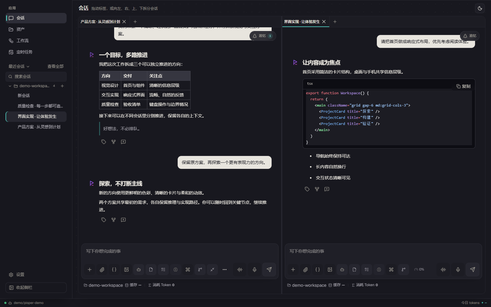
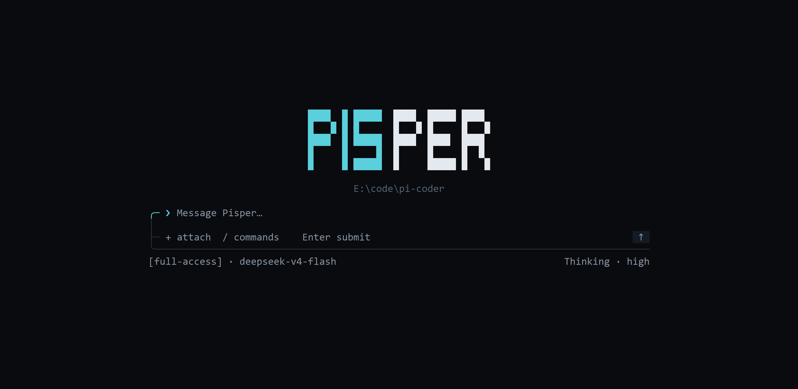
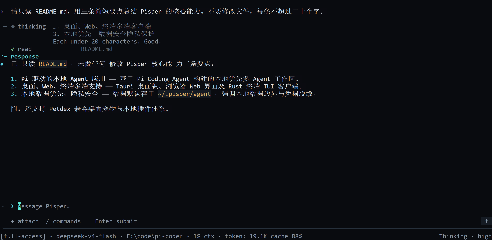

LOCAL-FIRST · MULTI-AGENT
Pisper
多个 Agent，一处推进。
每个会话拥有独立模型、上下文、工作目录与权限。在追忆中回到任意完成 Turn，保留每条分支，再用标签跨会话直达关键决策。
Agent 应用
每条思路，都能继续。
看见对话如何分叉，在稳定 Turn 上留下标签，随时切换原有分支。Pisper 让长任务保持可追踪，也让关键上下文随时可达。

从对话到交付
一套完整的本地工作流。
-
01
有了新方向，不必重开
从已完成 Turn 衍生独立会话，继承此前上下文，同时保留原来的思路。
-
02
多会话与分屏
并行推进多个 Agent，随时重排、恢复和聚焦。
-
03
想要新能力，直接说
Pisper 会生成、校验并安装本地插件，下一轮 Agent 请求即可调用。
-
04
自动化与通知
用定时任务和工作流组织可重复执行。
-
05
会话级控制
每个会话独立选择模型、目录、思考等级与权限。
-
06
Git 与 SVN
在桌面或终端中查看、提交和管理工作区改动。
数据安全与隐私
先留在本机，再由你决定发往哪里。
Pisper 不提供托管或中转会话的云服务。日常数据默认由本机 Runtime 持有，只有你配置并实际调用的 Provider、MCP、搜索或渠道会收到完成请求所需的内容。
LOCAL DATA ROOT
~/.pisper/agent
可通过 PISPER_AGENT_DIR 更改位置
会话、记忆、工作流、日程、用量与连接配置默认保存在这里。
-
01
本地服务保护
桌面 Runtime 默认只监听 127.0.0.1，并使用随机启动 Token、受限 Cookie 与写请求 Origin 校验；Pi 遥测默认关闭。
-
02
已知格式脱敏
常见 API Key、Bearer/JWT、访问令牌、私钥和数据库连接串会在记忆落盘、记忆二次模型处理，以及错误、MCP 与审批摘要展示前被替换。
-
03
凭据与权限隔离
凭据保存在本机配置，不通过普通配置接口回显给 Agent；宿主 Shell 会移除常见凭据环境变量。只读、完全访问和单次审批控制工具执行边界。
-
04
记忆先确认
自动推断的会话记忆先进入待确认区，确认前不参与召回；候选、单条记忆和会话均可拒绝或删除。
脱敏只识别常见敏感格式，不是完整 DLP、沙箱或端到端加密。普通 Prompt、文件和工具结果不会被全局匿名化；发送前请自行检查，并遵守所选第三方的隐私政策。Provider 与渠道凭据目前位于本机 Agent 数据目录，而不是操作系统钥匙串，请保护该目录和备份。
独立组件更新
需要更新什么，就只更新什么。
桌面端提供统一检查入口。Desktop、TUI 和 Runtime 分别更新、签名验证并安全切换，失败时自动回退到内置版本。
界面、桌面集成与统一更新入口
面向终端的轻量交互客户端
会话、工具、模型与自动化服务
同一能力，两个入口
离开桌面，也不离开上下文。
Ratatui TUI 连接同一 Runtime，保留会话用量、思考状态、工具活动、计划和 Git/SVN 工作区能力。Node.js 20+ 用户可直接通过 npm 安装：
npm i -g pisper
npm 包含 Web、TUI 与 Runtime，安装完成后即可使用。首次进入后使用
/provider 选择 Provider 并安全配置 API Key；运行
pisper web 可直接打开包内 Web 前端和本机认证配置页。


WINDOWS · MACOS · LINUX
从桌面端开始。
安装包已包含 TUI 与 Runtime，无需单独安装 Node.js。